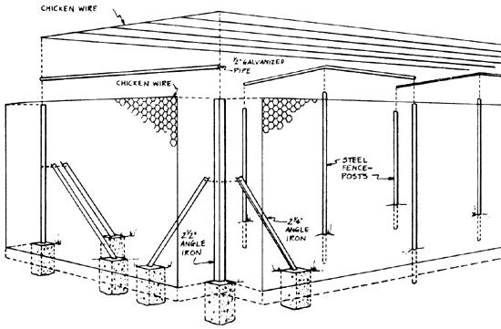
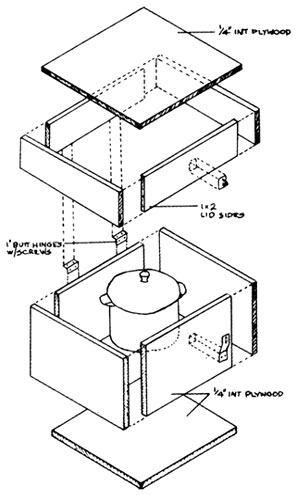
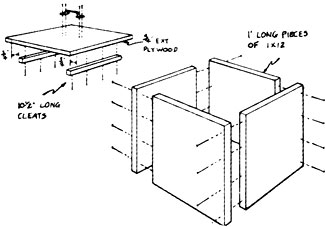
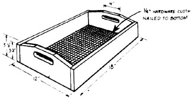

From Build It Better Yourself by the editors of Organic Gardening and Farming (restricted) , $16.95 hard cover, copyright ©1977 by Rodale Press, Inc., Emmaus, Pa. Reprinted with the permission of the publisher, and available from any good bookstore or from Mother's Bookshelf.
Some of the best homestead tools and devices around aren't for sale in any store. They're the ones conceived and tested on farms-and in back yards-around the world. Many are homemade varieties of commercially available implements . . . others are personal answers to particular how-to-do-it problems. Whatever, they all have one thing in common: A large part of the pleasure that comes from their use derives from the knowledge that they're self-made.
And so it is with the following four projects, selected from a helpful new book put out by the folks at Rodale Press. We've chosen items particularly well suited for summertime use, but Build It Better Yourself offers construction plans for over 200 more . . . a great number of which could surely benefit you!
When Lesley and Marion Blanchard moved to their eight-acre homestead near Sedona, Arizona, they found that, although their heavily mulched garden produced prodigiously ail summer, they were able to harvest only a scant amount. The problem was predators: "Deer, porcupines, rock squirrels, chipmunks, trade rats, skunks, gray foxes, jackrabbits, range cattle, and birds," Mrs. Blanchard relates. "You name it, we have it."
The Blanchards live in "open range" country, which means that it's legally up to the homeowner to fence in his property against cattle, not up to the cattleman to keep his roaming herd within bounds. The cattle, porcupines, and squirrels were particularly destructive.
Refusing to surrender, the Blanchards designed a colossal cage 20 feet wide by 100 feet long to keep out the marauders. In this space Les planted sixteen dwarf fruit trees-peaches, pears, apples, apricots, plums, cherries, and prunes-all of which would mature at less than the 8-foot height of the cage. The trees were planted 10 feet apart, with vegetables occupying the rows between the trees.
Within two years, the apricot, peach, and apple trees were bearing heavily. Thanks to the cage, the fruit now belongs exclusively to the Blanchards, who no longer need battle the beasts and the birds for their tree-ripened harvest.
[1] Measure the garden perimeter (keeping width 10 feet), mark the corners with stakes, and stretch a string between the stakes.
[2] Stretch a string lengthwise down the center.
[3] Space the outer posts 12 to 15 feet apart.
[4] Use the center string to mark the position of the center posts. They should be in line with the outer posts.
[5] At each mark and the corners dig a hole about 12 inches deep.
[6] Between holes dig a narrow trench about 6 inches deep.
[7] Cut four pieces of 2-1/2-inch angle iron 9 feet long for corner posts.
[8] Mix cement. Place the 9-foot corner posts in corner holes and cement in place. Posts can be tied in vertical position until cement sets.
[9] Assemble as many side uprights as needed, using 9-foot-long 2-inch steel posts. Place in holes and fill with dirt, tamping down well.
[10] Set steel fenceposts 10 feet long for center uprights in holes and fill with dirt, tamping down well. Then brace with dirt packed to a height of 12 inches around base of posts.
[11] After corners are set, brace each corner with two 2-1/4-inch angle irons set in concrete. Fasten the braces to the uprights with 1-inch by 1/4-inch bolts.
[12] Overhead crosspieces are of 1/2 inch galvanized pipe cut 10-1/2 feet long and bent to arch over taller center uprights.
[13] End crosspieces are 10-foot sections of 1/2-inch galvanized pipe. The end crosspieces are not bent.
[14] To fasten the crosspieces to the center posts to keep them from moving, run a length of 10-gauge galvanized wire down the center of the plot from one end to the other.
[15] Starting at the center of the top, unroll 1-inch wire netting the length of the plot. Work your way down to the sides wiring each new row together.
[16] Before beginning sides, decide where you want the gate. The best spot is next to an upright. Measure 3 feet from an upright and dig a 12-inch hole. Sink a 7-foot length of fencepost into hole and fill with dirt. The 6-inch trench which runs between these posts (under the gate) should be filled with concrete.
[17] Continue covering sides with 1-inch wire netting, but leave the gate opening uncovered.
[18] The gate can be as plain or fancy as you like. Its purpose is to keep the varmints out.
The hot box is a homemade device with which you can make casserole and soup-type dishes with a fraction of the energy you would use in traditional stove-top or oven-cooking techniques. The box works on this principle: food is brought to boiling, 212°F and above, and quickly placed in the insulated box. Its own heat is retained and finishes the cooking.
You should have a reliable kitchen thermometer to use with the hot box. Experience with the hot box in Rodale Press's Fitness House kitchen showed that after four or five hours in the hot box, the temperature of food dropped to between 140° and 160°F, depending on the ingredients and how full the pot was.
According to the U.S. Department of Agriculture, the danger with slow-cooking methods is when the warming time to high temperatures, the 200°-plus range, is long. This allows bacteria to multiply before they are killed, leaving behind toxins that can make you just as sick as the live bacteria.
The USDA says that between 140° and 165°F, bacteria growth is prevented, but live bacteria may survive. The key, therefore, is to bring the food to the boiling temperature to kill these bacteria first.
The simple hot box shown here uses 2-inch-thick Styrofoam and is lined with aluminum foil. The box itself is made from 1/4-inch plywood. You'll have to know what size pot you'll be using, because the box must be built to fit it.
WOOD
1 4' X 4' sht. 1/4" interior
plywood cut to fit your pot
1 X 2 stock cut in 4 pcs. to form
sides of lid
HARDWARE
3/4" brads
Wood glue
White glue
2 1" butt hinges w/screws
1 hasp and staple
MISCELLANEOUS
2" X 2' X 9' Styrofoam cut to fit
inside of box
Aluminum foil
[1] Construct a square box 4 inches larger than the outside diameter of your pot. It should be 2 inches taller than the pot with its lid in place. Use 3/4-inch brads and wood glue to assemble the box.
[2] To make the lid, start with a square of plywood with dimensions 1-1/2 inches greater than the outside dimensions of the box. Cut 1 X 2 stock to fit the edges, and nail and glue the pieces in place to make a tight fit.
[3] Before you cut your Styrofoam sheet, cover it with aluminum foil, shiny side up. Use white glue to fasten it. After it has dried, cut the Styrofoam to fit first the bottom, then the sides, and-finally-inside the lid of the box. Again, use glue to hold it in place.
[4] Use two 1-inch butt hinges to attach the lid. Install a light hasp to the front edge of the lid and a staple to the front of the box.
A good way to keep your garden tools both clean and rust free is to build an oiling/cleaning pit. All you need do is dig a hole near the entrance to your toolshed, build a wood or metal framework inside the hole, and fill it with sand. Next time you change the oil in your car, tractor, or mower, just pour the old oil into the sand and mix it up. You can get old oil from gas stations if you don't have any around. Try to maintain a sandy texture without too much oil; if you put your hand in, it should just pick up a trace of oil, not be dripping wet. With the oil and sand mixed, just work your tools in the mix for a few seconds, and they should be clean, oiled, and ready to be put away.
Cut four 12-inch-long pieces of 1 X 12. Using a simple butt joint and 8d nails, fasten the pieces together into a square frame. Dig a hole large enough to accommodate the frame so that it will project about 2 inches above the ground. Fill the frame with builder's sand, then backfill with soil around the outside of the frame. Pour that old oil in with the sand and work it with a shovel.
WOOD
1 pc.1 X 12 X 6' or
Walls: 4 pcs. 1 X 12 X 12"
Lid: 1 pc. 1 X 12 X 11-1/4" (or
1 11-1/4" sq. sht. 314" ext. plywood)
1 pc. 1 X 1 X 2' or
Cleats: 2 pcs. 1 X 1 X 10-1/2"
HARDWARE
8d nails
1-1/4" brads
1 door pull
Wood preservative
If you're a bit fussy, you could fashion a lid for the tool cleaning pit. Cut an 11-1/4-inch-square piece of 3/4-inch exterior plywood. To one side fasten a common door pull handle. To the other fasten two 10 1/2-inch cleats with brads to help keep the lid in place.
For the sake of longevity, it would be good to use the well-known rot-resistant materials or wood treated with a wood preservative.
A simple sifter for compost or potting soil can be made by nailing a piece of 1/4-inch hardware cloth to the bottom of a 12-inch by 18-inch frame.
WOOD
1 pc. 1 X 4 X 4' or
Sides: 2 pcs. 1 X 4 X 18"
1 pc. 1 X 6 X 2'or
Ends: 2 X 6 X 10-112"
HARDWARE
6d nails
1 pc. 12" X 18" hardware cloth,
1/4" mesh
3/4" staples
[1] Cut two 18-inch lengths of 1 X 4 and two 10-1/2-inch lengths of 1 X 6.
[2] Taper the ends and cut handholds into them. From a corner at each end of the boards, measure and mark 2 inches along the butt end and 3-1/4 inches along the edge. Draw a line connecting the two points and cut along the line. Then mark a 1-inch by 3-1/2-inch rectangle in the upper middle of each end board, as shown. Cut out the rectangle with a keyhole or coping saw.
[3] Butt the sides against the ends and nail the sifter frame together, using 6d nails.
[4] Staple a 12-inch by 18-inch piece of 1/4-inch hardware cloth to the bottom.
|
 |
 |
 |
|
 |
|
|